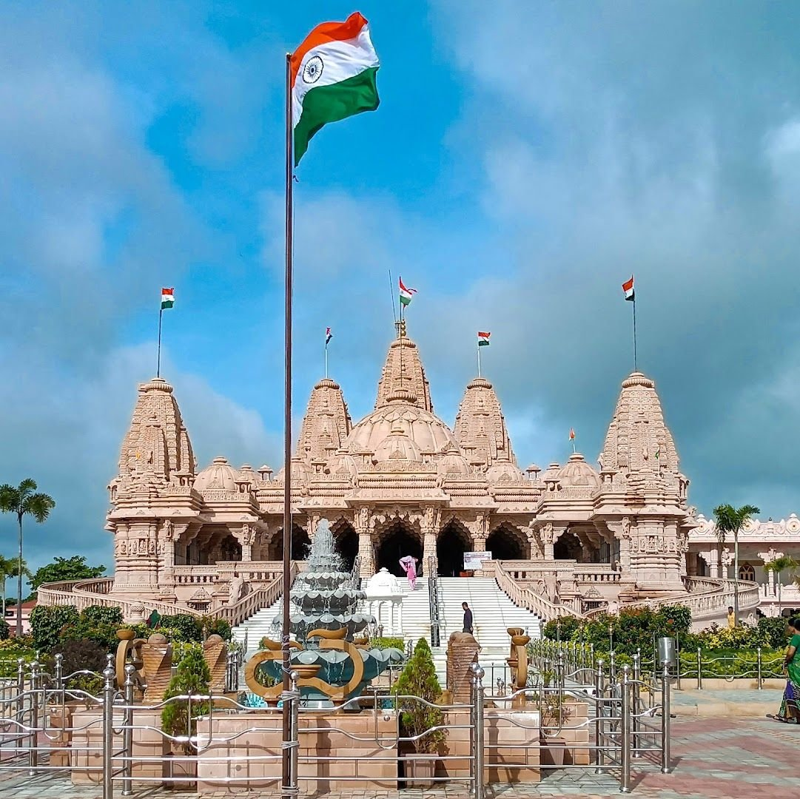
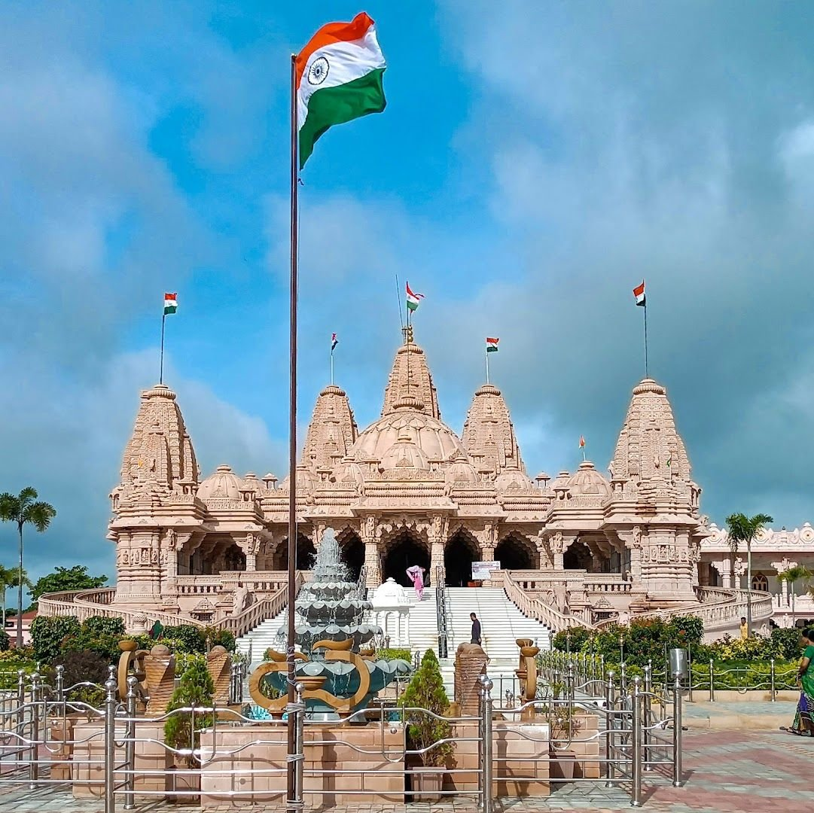
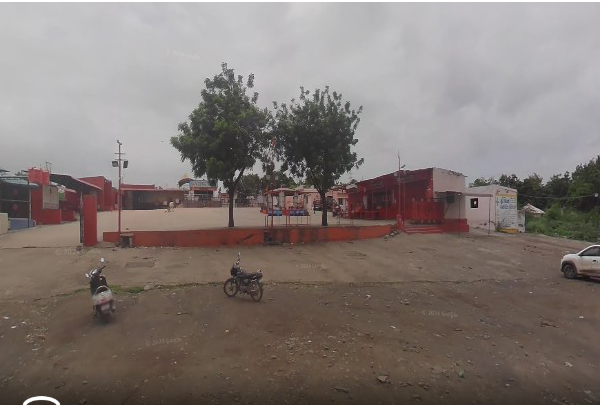
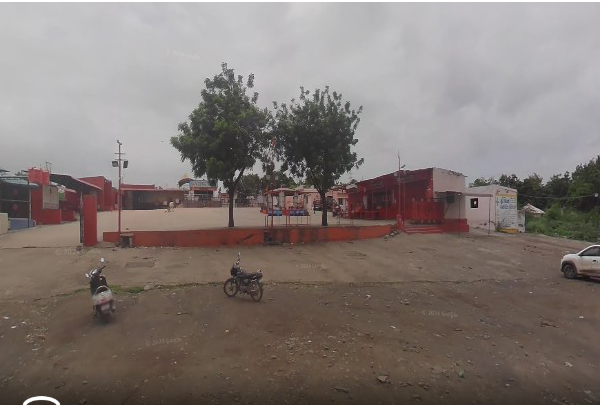

History of Anjar
Anjar is one of the oldest towns in the Kutch district of Gujarat, with a history
that spans several centuries. The town was founded in the early medieval period
and gradually developed into an important cultural and trading center. Due to its
strategic location between coastal ports and inland regions, Anjar played a key
role in regional trade and movement.
Over the centuries, Anjar came under the rule of various dynasties, including the
Jadeja rulers, who significantly influenced its administration, culture, and
architecture. The town flourished with the construction of temples, stepwells,
lakes, and public spaces that reflected the artistic and spiritual values of the era.
Religious harmony and cultural traditions became deeply rooted in everyday life.
Anjar is also known for its strong spiritual foundation. Many temples and religious
institutions were established, making it a center of devotion and learning.
Festivals, rituals, and community gatherings played an important role in shaping
the social fabric of the town.
Despite its rich heritage, Anjar has faced severe challenges due to natural
disasters. The earthquakes of 1956 and 2001 caused widespread destruction,
claiming lives and damaging historical structures. However, the spirit of the
people remained unbroken.
With determination and unity, Anjar was rebuilt each time. The reconstruction
efforts transformed the town while preserving its cultural identity. Modern
infrastructure was developed alongside traditional values.
Today, Anjar stands as a symbol of resilience, heritage, and progress. It represents
the strength of its people, the richness of its history, and the harmony between
tradition and modern life.
 



 
